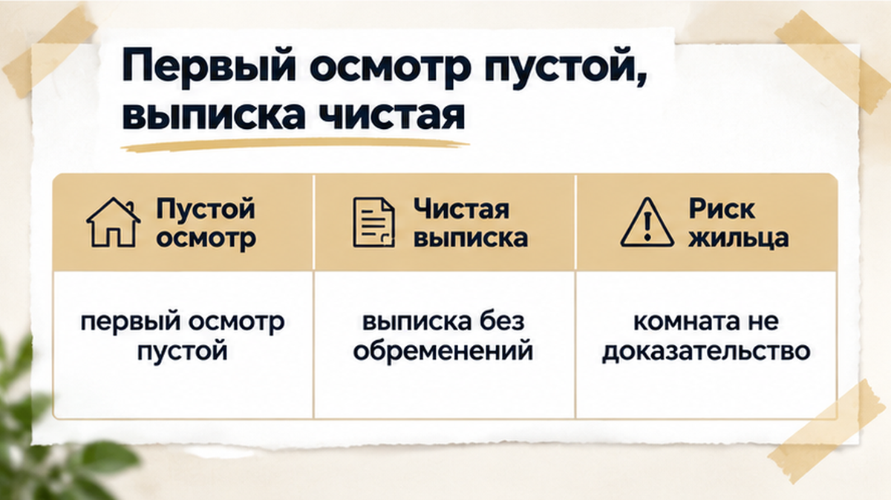
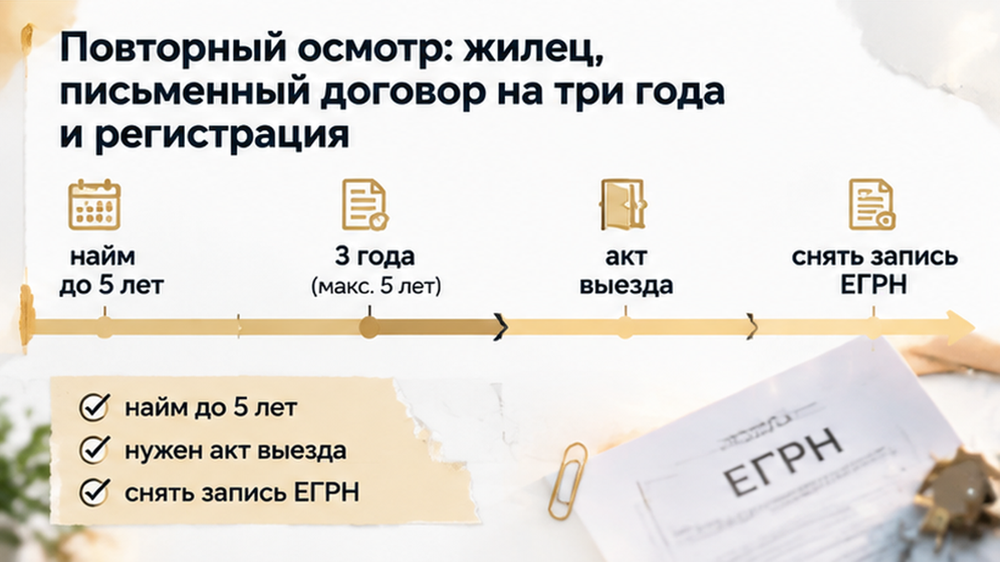

В Тюмени семья остановила покупку вторички за 7 дней до аванса: на повторном осмотре в квартире обнаружился жилец с зарегистрированным в ЕГРН договором найма на 3 года. Ипотеку уже одобрили, первый осмотр прошёл спокойно, а продавец уверял, что к передаче ключей наниматель съедет. Но обещанный выезд — не то же самое, что оформленное прекращение найма. Покупатели не стали передавать деньги и остановили подготовку сделки до подписания договора купли-продажи. Документ, который вовремя показали в квартире, изменил всю картину покупки.
Я Святослав Шакин, The Риэлтор, Тюмень. Разбираю, что проверять в квартире и документах до аванса, — в Telegram и MAX.
Семь дней до аванса — тот самый момент, когда квартира уже кажется почти купленной. Ипотеку одобрили, семья готовилась двигаться дальше, продавец обещал передачу ключей. Но банковское одобрение отвечает только на вопрос, готов ли банк финансировать покупку. Оно не говорит, кто вправе жить в квартире и получат ли покупатели свободное жильё в нужную дату.
На кухонном столе здесь лежат два разных вопроса. Можно ли купить эту квартиру? И можно ли получить её свободной к передаче ключей? Положительный ответ на первый ничего не гарантирует по второму.
Продавец говорил, что жилец съедет. Для покупателя такая фраза легко превращается в мысленное «вопрос уже решён». Но из неё непонятно, на каком основании человек живёт в квартире, когда заканчивается договор и оформлено ли его прекращение. Готовность продавца передать ключи и подтверждённая возможность передать свободную квартиру — разные вещи.
Их важно разделить до аванса. В разборе о том, как ипотеку одобрили, а регистрацию сорвали из-за строки в ЕГРН, логика такая же: пройденный этап не закрывает все остальные вопросы к покупке.

На первом осмотре покупателей никто не встретил. Квартира выглядела пустой, выписка была без обременений. В такой момент легко решить: раз в комнатах тихо, значит, можно обсуждать переезд.
Но отсутствие человека во время осмотра не доказывает, что у него нет права пользоваться жильём. Пустая комната не показывает срок договора найма. Выписка тоже не отвечает на все вопросы: она нужна для проверки прав, ограничений и обременений на дату выдачи, но не заменяет разговор о том, кто фактически живёт в квартире и почему.
Если продавец сам говорит о будущем выезде жильца, это повод запросить договор — даже когда квартира выглядит свободной. Почему в первоначальной выписке не было обременений, по имеющимся сведениям установить нельзя. Додумывать объяснение не нужно. Важно сопоставить актуальные сведения ЕГРН с документами, которые предъявляют в самой квартире.
Поэтому на повторном осмотре стоит смотреть не только на отделку, кухню и состояние комнат. Нужно вернуться к главному условию покупки: в каком виде квартиру передадут новым собственникам. В истории про обещанную скидку в два миллиона и риск внутри квартиры внимание тоже пришлось перенести с привлекательного предложения на то, что покупатель получает вместе с метрами. Здесь ответ появился именно при повторном визите.
На повторном осмотре квартира встретила покупателей уже не пустыми комнатами. Внутри жил человек — и теперь главным вопросом была не кухня и не будущая расстановка мебели, а основание его проживания: кто он, какой у него договор и когда заканчивается право пользоваться квартирой.
Жилец показал письменный договор найма на три года и подтверждение его государственной регистрации. Срок на дату осмотра ещё не закончился. Это уже не история про то, успеет ли человек собрать вещи к нужной дате. Перед покупателями лежал действующий договор, который требовалось прочитать до передачи денег.
Сам по себе жилец в квартире ещё не доказывает долгосрочный найм. Но здесь основание проживания было предъявлено: письменный договор и подтверждение регистрации. Отмахнуться от этого словами «он скоро съедет» означало оставить главный вопрос сделки без ответа.
И речь шла не о прописке. Регистрация по месту жительства и государственная регистрация обременения, связанного с долгосрочным наймом, — разные вещи. Покупателям нужно было понять, на каких условиях человек живёт, сколько времени осталось и как оформляется прекращение договора. Одного согласия продавца отдать ключи для этого недостаточно.
Первая выписка без обременений не объясняла обнаруженное противоречие. Её требовалось сопоставить с предъявленными документами и актуальными сведениями ЕГРН. На глаз выбирать, какой бумаге верить, здесь нельзя. Как и в истории, где за обещанной скидкой скрывался риск в самой квартире, увиденное на месте меняет вопросы к сделке ещё до аванса.
Раньше продавец говорил: жилец освободит квартиру к передаче ключей. После предъявления трёхлетнего договора это обещание пришлось проверить заново. Между словами «человек уедет» и документально подтверждённым прекращением найма оставалось расстояние, которое обычным телефонным разговором не закрыть.
Телефон продавца в такой момент нужен для точных вопросов: чем подтверждается будущий выезд, согласовано ли прекращение договора с нанимателем, какие документы увидят покупатели? Сам звонок ничего не прекращает. Уверенное повторение обещания не меняет срок в договоре и не подтверждает снятие зарегистрированного обременения.
Покупатели собирались приобрести квартиру для собственного проживания. Значит, им важно было понимать не только дату передачи ключей, но и на каком основании к этой дате жильё станет свободным. При действующем найме считать этот вопрос решённым заранее нельзя.
Здесь нужна та же привычка, что и в истории, где слова продавца и предъявленная справка не закрыли вопрос обременения: объяснение нужно довести до проверяемого факта. Если продавец рассчитывал передать свободную квартиру, требовались документы по найму и его прекращению.
Семья не передала аванс и прекратила подготовку к сделке до подписания договора купли-продажи. Одобренная ипотека не заставляла принимать обнаруженные условия. Покупатели остановились до денег: обещанный выезд к ключам ещё не был подтверждён так, чтобы на него можно было опереться при покупке.
Если арендатор живёт в квартире, а договор на три года зарегистрирован в ЕГРН, ждать обещанного выезда к ключам или сразу снимать сделку с повестки?

Продажа квартиры сама по себе не прекращает действующий договор найма. По статье 675 ГК РФ новый собственник становится наймодателем на прежних условиях. Вместе с квартирой он получает и обязательства перед нанимателем.
Поэтому слова «жилец съедет к ключам» остаются обещанием, пока нет документов о прекращении найма и подтверждения, что квартира действительно освобождена. Статья 460 ГК РФ требует передать вещь свободной от прав третьих лиц либо предупредить покупателя о таких правах. Разговор на кухне этого не заменяет.
В этой истории трёхлетний срок договора ещё не закончился. Договор был письменным, а поскольку срок превышал год, его зарегистрировали. Это не вопрос прописки и не временное пребывание гостя. У нанимателя было самостоятельное право пользоваться квартирой в течение согласованного срока.
Максимальный срок найма жилого помещения — пять лет. Если срок в договоре не указан, он считается заключённым на пять лет. А если срок закончился, наниматель продолжает жить, а наймодатель не возражает, договор может возобновиться на неопределённый срок. Поэтому старая дата в документе ещё не означает, что проблема исчезла: нужно понять, как стороны оформили прекращение и что происходило после указанного срока.
Выписка ЕГРН показывает права и зарегистрированные ограничения на дату выдачи, но не отвечает на все вопросы о фактическом проживании. Если в квартире кто-то находится, нужно выяснить основание и запросить документ. В материале о скидке в два миллиона и риске внутри квартиры была та же логика: то, что покупатель видит на месте, может изменить решение сильнее, чем привлекательная цена.
Если продавец утверждает, что договор уже расторгнут, нужны не заверения, а подтверждения: соглашение о прекращении, акт возврата помещения, документы о снятии зарегистрированной записи и фактический выезд нанимателя. Пока этого нет, конкретную дату освобождения нельзя считать гарантированной.
До передачи аванса стоит собрать документы по квартире и жильцам, а затем сверить их с датой сделки. Сначала запросить актуальную выписку ЕГРН. Затем — полный договор найма со всеми приложениями и пунктами о досрочном прекращении. В нём нужно посмотреть даты, порядок уведомления, обеспечительный платёж и обязанность освободить квартиру.
Если продавец говорит, что наниматель уже выехал, попросите документы о прекращении. Фотографии пустых комнат недостаточно: важнее подписанный акт возврата, подтверждение передачи ключей и понимание, кто фактически находится в квартире в день повторного осмотра.
| Что проверяем | Что выясняем | Что фиксируем |
|---|---|---|
| Проживание | Кто находится в квартире и на каком основании? | Повторный осмотр, объяснение жильца, копия договора |
| Срок найма | Пересекается ли он с датой передачи ключей? | Договор с датами и условия досрочного прекращения |
| Регистрация | Зарегистрирован ли долгосрочный договор? | Подтверждение записи или документ о регистрации |
| Прекращение | Чем подтверждён выезд нанимателя? | Соглашение, акт возврата, документы о снятии записи |
| Условия сделки | Что произойдёт, если квартира не освободится? | Письменное условие в договоре купли-продажи |
Свежая выписка не закрывает все вопросы сама по себе. Похожую ситуацию разбирали в материале об одобренной ипотеке и строке в ЕГРН: один пройденный этап не отменяет остальные проверки. А о том, почему словам продавца нельзя противопоставлять только ещё одни слова, — в разборе справки о закрытии ипотеки и непогашенного обременения.
Порядок здесь простой: запросить договор и выписку до аванса, сверить срок с датой сделки, поговорить с жильцом и остановиться, если документы расходятся с обещаниями. В этой истории семья именно так и поступила: не стала передавать деньги, пока не поняла, на каких условиях получит квартиру.